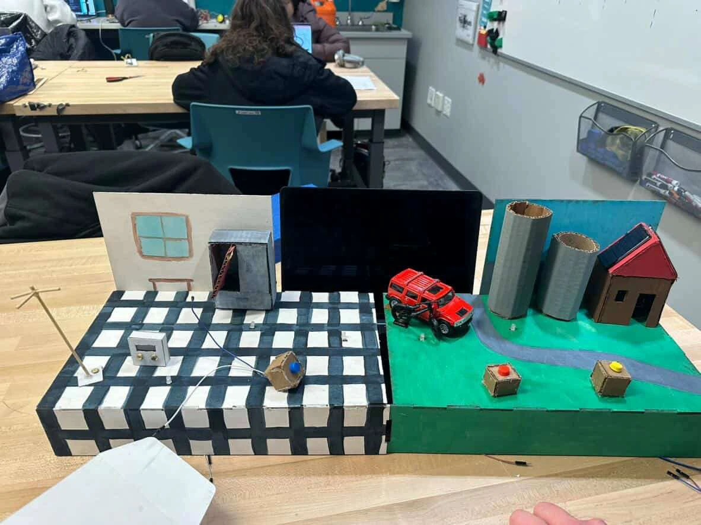
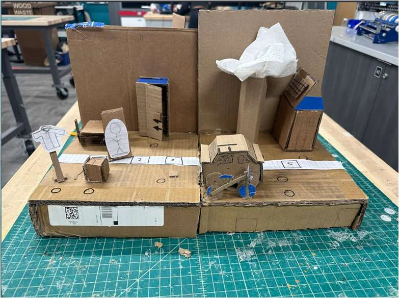

Physical prototyping
Interactive renewable energy exhibit
Five energy scenarios, two model environments, and a hands-on challenge for young visitors.

Designing for children
Our four-person team built indoor and outdoor scenes for children ages 7–11. Visitors used buttons to choose an answer to each energy scenario. Green and red LEDs and a buzzer gave immediate feedback through a Raspberry Pi Pico.
My contribution
I helped fabricate the model and install the wiring and controls. During key project phases I coordinated weekly meetings and tracked milestones. I also made our demonstration video and co-presented the exhibit at Northeastern’s Engineering EXPO, where children and staff tried the five scenarios.
